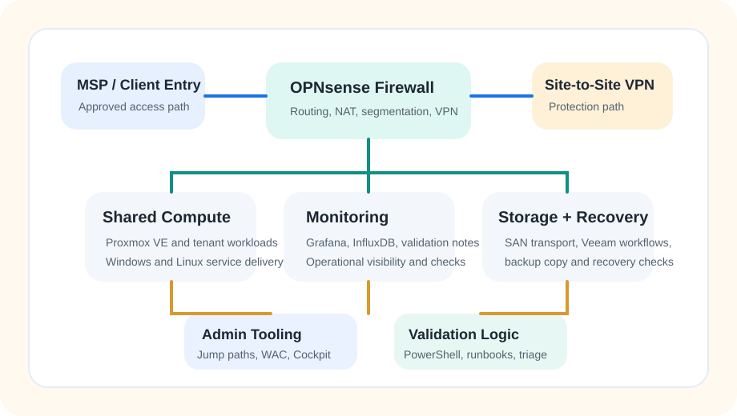
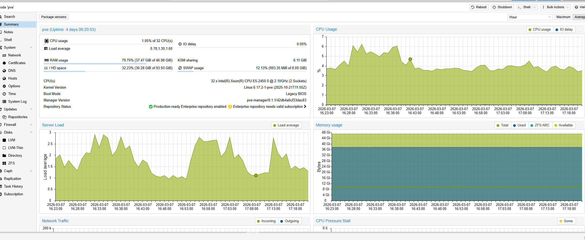
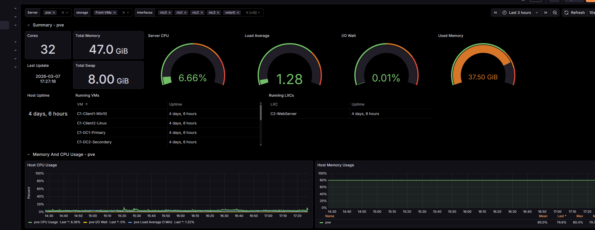
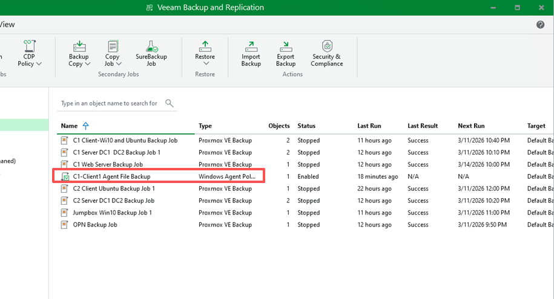

Ottawa, ON | Expected Graduation: April 2026
Enterprise Infrastructure Capstone, with Site 1 as the main focus.
I am a Computer Systems Technician - Networking student focused on junior systems, network, and infrastructure support roles. This portfolio focuses on Site 1, the simulated private-cloud primary environment in my capstone project. My hands-on work centered on shared compute, tenant-separated services, backup workflows, monitoring, and support-oriented documentation. The secondary environment appears only where it helps explain MSP access, offsite copy, and recovery flow.
Featured Work
One capstone project showing how I build, document, and support infrastructure.
Capstone Infrastructure Project
Simulated private-cloud primary environment
Collaborated with five teammates to design and document an enterprise environment spanning Company 1, Company 2, MSP operations, shared storage, and cross-site protection. My primary implementation focus was Site 1, the simulated private-cloud primary environment.
- Primary hands-on delivery: tenant, storage, DMZ, and management paths
- Shared compute hosted on Proxmox VE with segmented VLAN design
- Backup and offsite copy workflow routed through site-to-site OpenVPN
- Integrated handover package prepared for support transition
Operations and Validation
How Site 1 stays supportable
The public version of the project focuses on the operational logic behind the build: approved administrative paths, backup continuity, validation cadence, and fast triage. Integrated public-cloud context stays in the background unless it helps explain recovery dependencies.
- Daily, weekly, monthly, and post-change checks
- Failure-domain and dependency thinking
- Bounded administrative and MSP access model
- Backup, repository, and offsite protection validation
Capstone Repository
Readable GitHub proof, not just a long handover
The linked GitHub project distills a larger integrated handover into sanitized architecture notes, an operations runbook, a fast-triage guide, a Site 1 evidence gallery, and supporting PowerShell artifacts so reviewers can see both the stack and the way I document support work.
- Site 1 architecture and evidence gallery
- Daily, weekly, and post-change validation guidance
- Fast triage guide with likely fault domains
- PowerShell-backed validation and archive helpers
Architecture
High-level Site 1 architecture map

I keep external-facing demos high level and sanitized. The goal is to show architecture, validation habits, and operational thinking without exposing secrets, internal hostnames, or real administrative data. Public artifacts emphasize Site 1 as my main hands-on scope while still showing where offsite protection matters to the integrated design.
- Public-facing diagrams use sanitized service names and simplified flows
- Internal IPs, credentials, and VPN details stay private
- Evidence focuses on stack, outcomes, and supportability
Evidence
Four screenshots that explain Site 1 faster than a long document.

Shared compute on Proxmox VE
Capacity and utilization snapshot from the virtualization layer hosting the primary environment.

Operational visibility
Grafana view used to document host health and workload monitoring across the Site 1 platform.

Backup and recovery readiness
Veeam job status used to show protected workloads and recovery-oriented checks in the primary environment.
Why not upload the whole handover?
Faster for HR, cleaner for public review
The original integrated handover is useful for delivery, but it is too long for a recruiter-first view. This page and the GitHub repo pull out the highest-signal parts: architecture, metrics, evidence, and support logic.
- Shorter review path for recruiters
- Still credible for technical interview follow-up
- Safer than publishing raw internal screenshots in bulk
Core Stack
Tools I used most heavily on Site 1
Infrastructure
Proxmox VE, Hyper-V, Windows Server 2019/2022, Ubuntu, Red Hat/CentOS, Alpine Linux
Networking
Cisco IOS, ArubaOS, VLANs, OSPF, STP, TCP/IP, DNS, DHCP, VPN, OPNsense/pfSense, NAT, DMZ
Operations
AD DS, GPO, Samba AD, iSCSI, Veeam Backup & Replication, Grafana, InfluxDB, Windows Admin Center, Cockpit
Support and Validation
PowerShell, Wireshark, Microsoft 365, technical handover documentation, operational checks, and failure-domain triage
Contact